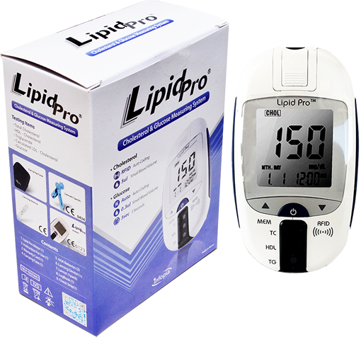

KIT LIPID PRO MEDIDOR PARA PERFIL DE LÍPIDOS Y GLUCOSA

CARACTERÍSTICAS:
Uso fácil del medidor 5 en 1.
Colesterol total.
Colesterol HDL.
Calculador de colesterol LDL.
Triglicéridos.
Glucosa.
• No necesita codificación.
Resultados de las pruebas inmediatos.
Resultados de glucosa en 3 segundos.
Resultados de colesterol en 2 minutos.
• Muestra de sangre mínima:
- 0.3 µl para glucosa.
- 5 µl para el colesterol.
Tira única para la determinación de 4 parámetros.
Tiras individuales disponibles para colesterol, colesterol HDL y triglicéridos.
Impresora térmica de resultados para dispositivo LIPID PRO.
Imprime directamente del medidor de resultados.
Registro: 1217E2013 SSA
DATOS COMPLEMENTARIOS: Para mayor información comunicarse a:
FORE CARE MÉDICAL, S.A. DE C.V.
Tels.: (55) 5568-8240, 5568-8061
e-mail: info@forecaremedical.com
atencionclientes@forecaremedical.com
ventasprivado@forecaremedical.com
ventasgobierno@forecaremedical.com
www.forecaremedical.com